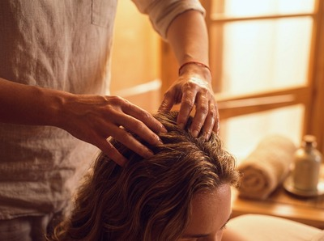

If tight shoulders, a heavy head, or persistent tension headaches are part of your daily life, a Thai head massage in Greenock could be exactly what your body needs.
Thai Massage Greenock offers this deeply calming upper-body treatment to help you reset, recover, and breathe again.
Thai head massage is a traditional upper-body treatment rooted in the same principles as Traditional Thai Massage. It focuses on the head, face, neck, shoulders, and upper chest. Using compressions, acupressure, rhythmic movements, and gentle stretching along the body's sen energy lines, it targets where most people carry the heaviest load.
Unlike a general relaxation treatment, it works with specific pressure points. This eases muscle tension, improves circulation, and quiets an overactive mind.

Sessions last 30 to 60 minutes and are done seated or lying down, fully clothed. No oils are used unless you prefer a version with scalp oil.
The treatment covers the scalp, temples, forehead, neck, and upper shoulders. Jariya uses thumbs, knuckles, and palms to release built-up tension and restore balance to the upper body.
Thai head massage in Greenock suits anyone who spends long hours at a desk, behind a wheel, or staring at a screen. It helps people who carry ongoing tension in the upper back, neck, and jaw.
It also works well for those who get regular stress headaches. And if you have never tried Thai therapy before, this is a great place to start — without committing to a full-body session.
You stay fully clothed throughout, seated or lying on the massage table. Jariya begins with a short consultation to find out where you are holding tension and what you want from the session.
The treatment then moves through the upper back, shoulders, neck, scalp, and face in a flowing sequence. Each step gradually releases layers of tightness.
Most clients leave feeling noticeably lighter, with a clearer head and a calm that lasts well into the rest of their day. You can book your session online and be ready to walk in with nothing to prepare beyond arriving relaxed and hydrated.
Thai Massage Greenock is run by Jariya Malone, a certified therapist trained at Bangkok's renowned Wat Po temple. Every session is tailored to you.
Jariya keeps detailed treatment notes and builds on what she learns each visit. Over time, your care becomes more focused and more effective. If you are ready to feel the difference, secure your appointment today.
No. Thai head massage is done fully clothed. Wear something comfortable with a loose collar or neckline so Jariya can work freely on the neck and upper shoulders. There is nothing to remove and no prep needed beyond arriving on time.
Sessions run from 30 to 60 minutes depending on what you book. A 30-minute treatment covers the scalp, neck, and shoulders. A longer session lets Jariya extend work into the upper chest, face, and temples for a fuller release. Both options are available when you book online.
Most people feel calm, clear-headed, and much lighter through the neck and shoulders. Some clients sleep better that same night and notice fewer headaches in the days that follow. It is normal to feel deeply relaxed, so give yourself a little time before heading back into a busy schedule.
For general stress relief and upkeep, a session every two to four weeks works well for most clients. If you have chronic tension headaches or ongoing neck pain, more frequent visits in the short term can help break the cycle. Jariya will suggest a schedule based on your needs.
Many migraine sufferers find that regular head massage cuts both the frequency and strength of attacks. That said, avoid booking during an active migraine episode. If you have a diagnosed condition or take regular medication, let Jariya know at your consultation so the treatment can be adjusted to suit you.
Thai head massage focuses on the scalp, neck, shoulders, and upper chest. It targets muscle tension and circulation across the upper body. Thai facial massage works the face, using pressure points to ease jaw tension, sinus pressure, and skin tone. The two treatments work well together and can be combined in one session.